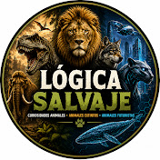
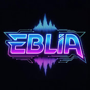

Todas mis redes,
en un solo sitio.
Mis perfiles personales, las webs y proyectos que tengo en marcha, y todos mis canales de YouTube. Lo que construyo, lo uso yo mismo.
Mis perfiles personales, las webs y proyectos que tengo en marcha, y todos mis canales de YouTube. Lo que construyo, lo uso yo mismo.
Historias breves de un minuto: relatos, curiosidades y micro-narrativas que enganchan en segundos. Contenido corto diseñado para retención máxima.
Actualidad explicada clara y directa. Resúmenes informativos para entender lo que pasa sin ruido ni relleno.

El reino animal y sus rarezas: comportamientos sorprendentes, adaptaciones extremas y datos curiosos de la fauna. Animales asombrosos explicados en formato corto.

Música IA original: canciones generadas con inteligencia artificial mediante Crea Tu Canción. Temas y bandas sonoras creadas de forma automática.
Hecho con Crea Tu Canción →Estrategia de póker basada en datos y matemáticas. Análisis de manos, rangos, EV y decisiones óptimas para mejorar tu juego.
Filosofía estoica aplicada al día a día: Séneca, Marco Aurelio y Epicteto en píldoras. Reflexiones para la calma, la disciplina y el dominio mental.
Estos canales no se editan a mano vídeo a vídeo: son la salida de un pipeline de producción automatizada de extremo a extremo. Cada pieza —guion, voz, imagen, subtítulos y montaje— se genera y compone de forma programática, y la publicación se orquesta en varios canales sin intervención manual. Es la misma clase de arquitectura que implemento para clientes: reproducible, monitorizada y sin lock-in.
El guion de cada pieza se redacta con modelos de lenguaje (LLM) a partir de prompts y guías de estilo por canal, con control de tono, longitud y estructura narrativa.
La narración se produce con síntesis de voz (text-to-speech), generando la pista de voz en off con prosodia y ritmo coherentes con el formato del canal.
El apartado visual se crea con modelos de difusión text-to-image, generando planos e ilustraciones a partir de descripciones derivadas del propio guion.
Los subtítulos se sincronizan por alineación forzada (forced alignment) sobre el audio mediante reconocimiento de voz (speech-to-text), encajando texto y tiempos al milisegundo.
El montaje final —imagen, voz, música y subtítulos— se compone y renderiza con ffmpeg, exportando en 16:9 para vídeo largo y 9:16 para formato vertical.
La publicación se automatiza y se distribuye en varios canales de forma programada, con metadatos, títulos y descripciones optimizados generados en el mismo flujo.